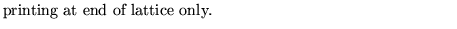
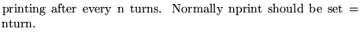

This operation traces particles that are placed on
ellipses with nominal emittances
for
many turns. It then fits an ellipse to the output
points obtained. From this fitted ellipse it determines
the average values for
.
It also computes the maxima
and minima emittances which informs about the diffusion
pattern of the motion. Variances of the tunes are also
computed.
Input format
GEOMetric aberrations .......(up to 80 characters)
,ener
ncase,nturn,njob
nplot,nprint
anplprt
Parameter definitions
, ener
ncase

nturn
njob
1
2
nplot
1
-1

nprint
-2

-1 
0
n


anplprt
Examples
The first example comes from demo5 and provides an FFT analysis with the plotting of the FFT spectrum but no printout of the spectrum.
The second example, taken from demo12, illustrates how the geometric aberration operation uses the twiss parameters computed in a previous movement analysis operation.
GEOMETRIC ABERRATIONS 2 0 .11 0 0 0 0 0 0 2 1000 1 1 -1 4.5 2.25 9 4.5 110; stop * The following is to illustrate the use of rmat and geometric * aberrations in conjunction with movement analysis movement analysis 1 1 1 -3 1 0 0.00001 0 0 0 0 0 0.002 0, geometric aberration 0 0 0 0 0 0 0 0 0 1 100 1 1 -2 10 10,